Computation in Complex Networks
with emergent spatio-temporal correlations
Neural Systems Theory
Max Planck Institute for Dynamics and Self-Organization


Some differences between computer and brain


Di Ventra & Traversa, J. Appl. Phys. (2018)
The brain as a complex network
Maybe the most complex "machine" that exists.
In humans:
$\approx$ 80 billion neurons
$\approx$ 10 000 connections each
Genetically encoded complex structure.
Source: MIT News

Hagmann et al. PLoS Biol. (2008)
Includes features beyond regular networks or random graphs
Examples:
Small-world networks
hierarchical networks
wikipedia

Moretti & Muñoz, Nat. Commun. (2013)
Only measure fraction of collective activity.
Biases collective observables, e.g., correlations.
Central challenge:
Derive subsampling invariant estimates.
Wilting & Priesemann, Nat. Commun. (2018)
Levina & Priesemann, Nat. Commun. (2017)
Priesemann et al., BMC Neuroscience (2009)
What do I mean with computation?
Explain how complex brain activity
generates complex behavior


(autonomous) driving
Eliasmith et al., Science (2012)
Compute function with trained networks (top down)


Nicola & Clopath, Nat. Commun. (2017)
Sussillo & Abbott, Neuron (2009)
Jeffery lab (online)
Eliasmith, Neural Comput. (2005)
Emergent collective dynamics (bottom up)
Emergent collective dynamics (buttom up)
 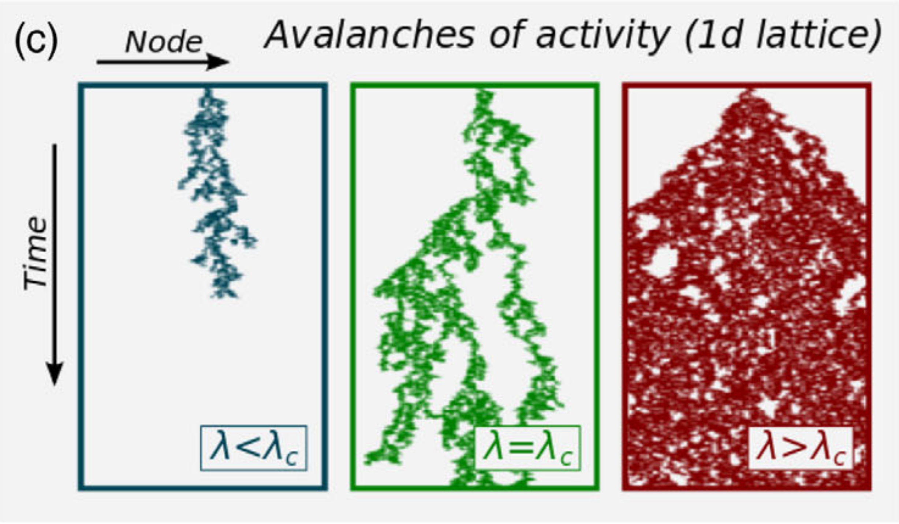
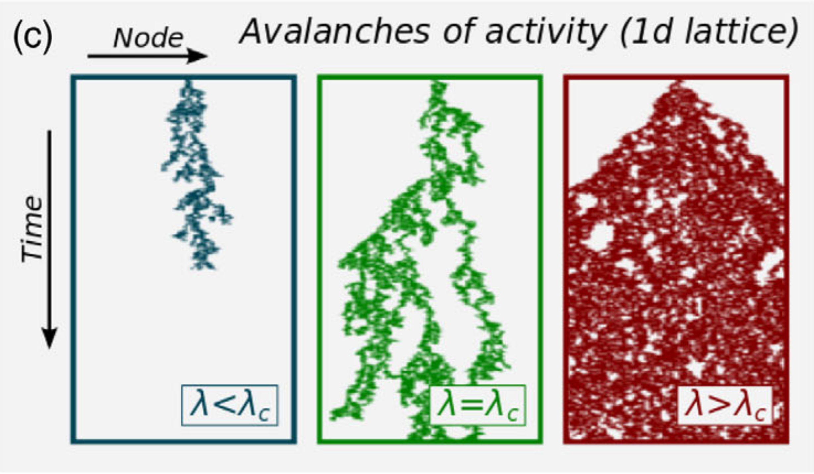
Muñoz, Rev. Mod. Phys. (2018)
Henkel, Hinrichsen & Lübeck, "Non-Equilibrium Phase Transitions" (2008)
Tchumatchenko et al., J. Neurosci. (2011)
Computation: Spatio-temporal correlations
Spatio-temporal correlations expected at
(non-equilibrium) phase transitions.
Neural networks self-organize close to critical point for computational benefits.
 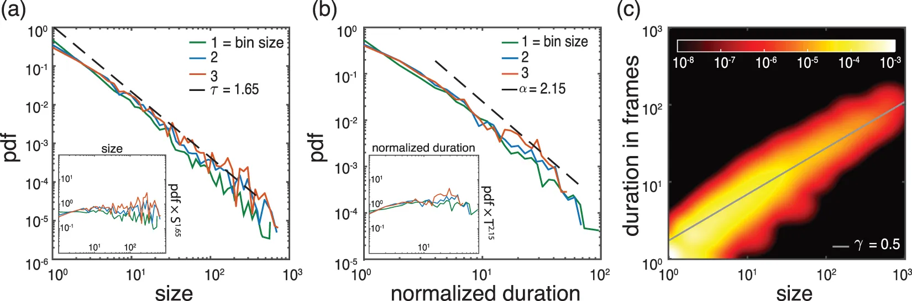
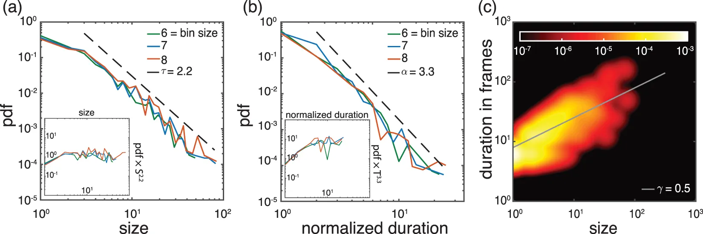
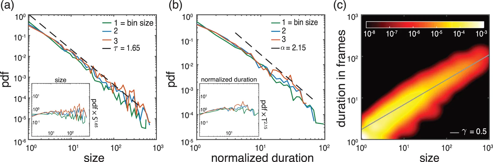
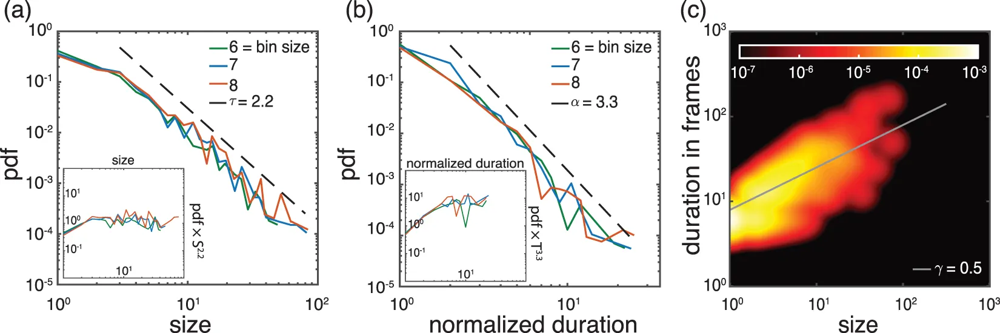
control
increased syn. density
 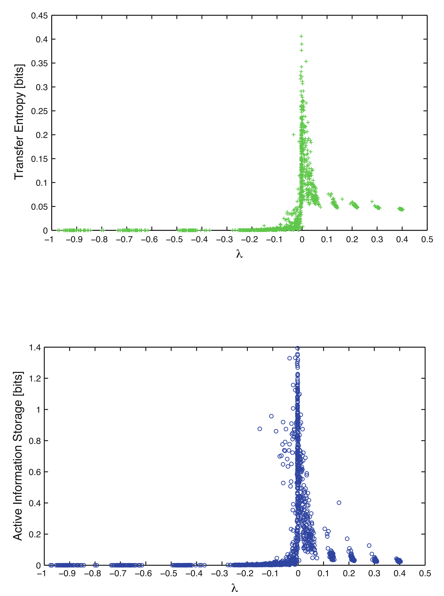
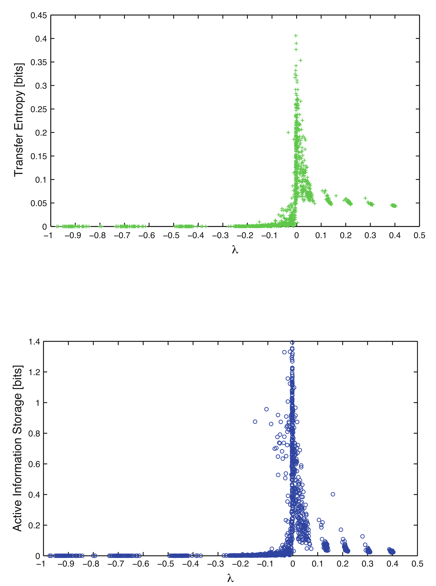
Boedecker et al., Theory Biosci. (2012)
Wilting et al., Front. Syst. Neurosci. (2018)
Yaghoubi et al., Sci. Rep. (2018)
Beggs & Plenz, J. Neurosci. (2003)
Bak, Tang, & Wiesenfeld, Phys. Rev. Lett. (1987)
Muñoz, Rev. Mod. Phys. (2018)
Neural trajectory of random network close to criticality encodes information about past.
Jaeger, Technical Report (2001); Maass, Natschläger, & Markram, Neural Comput. (2002); Jaeger & Haas, Science (2004)
Understand relation network structure $\leftrightarrow$ collective dynamics
Computation: Representation of input by collective response
Dean et al., Nat. Neurosci. (2005)
Wachowiak & Cohen, Neuron (2001)
Britten et al., J. Neurosci. (1992)
Human hearing range (dynamic range) $\approx 100\text{dB}$
Dynamic range problem
Dean et al., Nat. Neurosci. (2005)
Kinouchi & Copelli, Nat. Phys. (2006)
Efficient representation of input as collective response in complex networks
Computation in complex networks
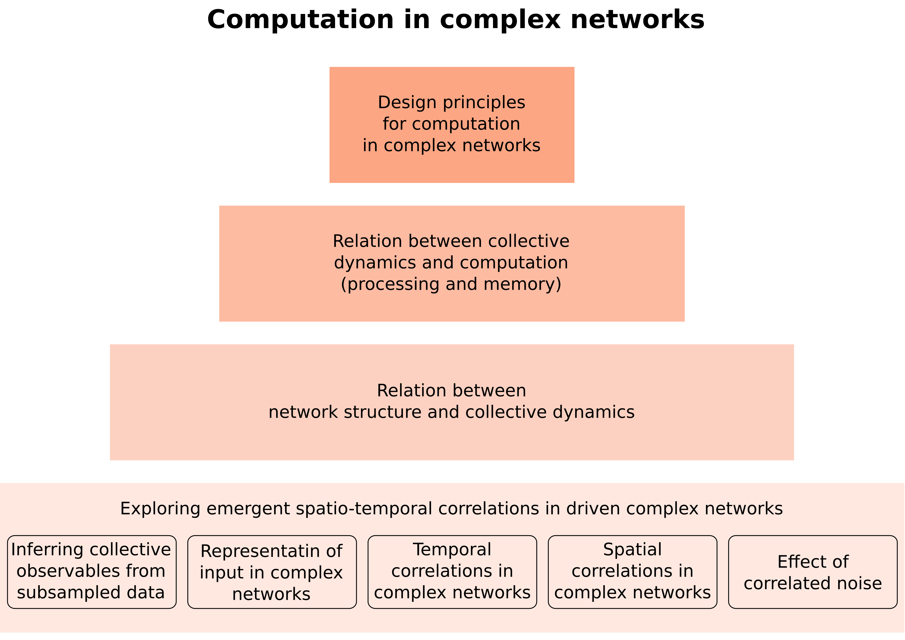Inferring autocorrelation time of subsampled systems with non-stationary external input
take mean-corrected timeseries to compensate for cyclostationary external input.
Wilting & Priesemann, Nat. Commun. (2018)
de Heuvel, Wilting, Becker, Priesemann & Zierenberg, in preparation
“SurvStat@RKI 2.0,” https://survstat.rki.de/
Pipa et al., Front. Integr. Neurosci. (2009)
Computation in complex networks
Ensemble of neural networks optimizes sensitivity to stimulus statistics
$m$
- time step $\Delta t$
- external excitation:
rate $h$ - internal excitation:
connectivity matrix $w_{ij}=\frac{m}{K_j^\mathrm{out}}$
Dean et al., Nat. Neurosci. (2005)
Zierenberg, Wilting, Priesemann, & Levina, arXiv (2019)
Ensemble of neural networks optimizes sensitivity to stimulus statistics
compensating coalescence
e.g. by probabilistic integrate-and-fire

Zierenberg, Wilting, Priesemann, & Levina, arXiv (2019)
Ensemble of neural networks optimizes sensitivity to stimulus statistics


Zierenberg, Wilting, Priesemann, & Levina, arXiv (2019)
Computation in complex networks
Emergent temporal correlations in self-regulated networks
brain:
fluctuating
more input
cultures:
bursty
low input
Can we explain the difference between culture and brain by a simple theory? - Yes!
MIT News
Zierenberg, Wilting & Priesemann, Phys. Rev. X (2018)
Emergent temporal correlations in self-regulated networks
- time step $\Delta t$
- external excitation: rate $h$
- internal excitation: connectivity matrix $w_{ij}$
- spiking neuron excites on average $m=f(w_{ij})$ further neurons
- key parameters:
- $h$ strength of external input
- $m$ strength of internal activation
post-synaptic weight $\alpha_j$
$\Delta\alpha_j = (\Delta t~r^\ast - a_j)\frac{\Delta t}{\tau_\mathrm{hp}} \qquad\text{with}\qquad \alpha_j\geq0$
Williams, O’Leary, Marder, Scholarpedia (2013)
Zierenberg, Wilting & Priesemann, Phys. Rev. X (2018)
Emergent temporal correlations in self-regulated networks

brain:
fluctuating
more input
cultures:
bursty
low input
Increasing the external input strength tunes collective dynamics from bursting to fluctuating
Zierenberg, Wilting & Priesemann, Phys. Rev. X (2018)
Emergent temporal correlations in self-regulated networks
 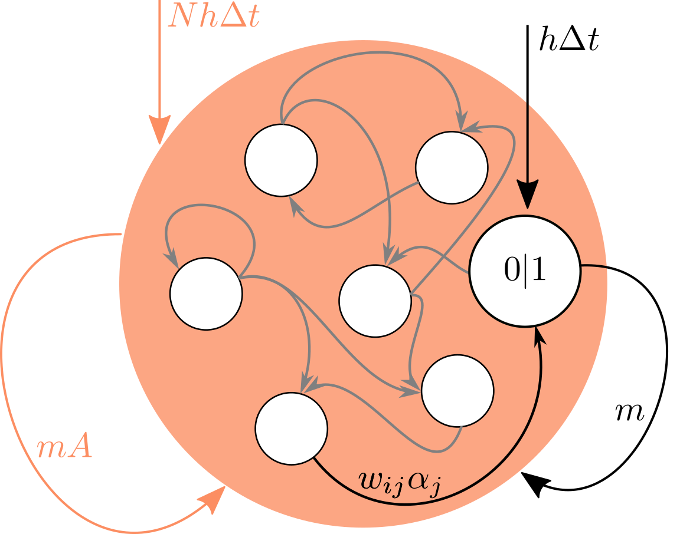
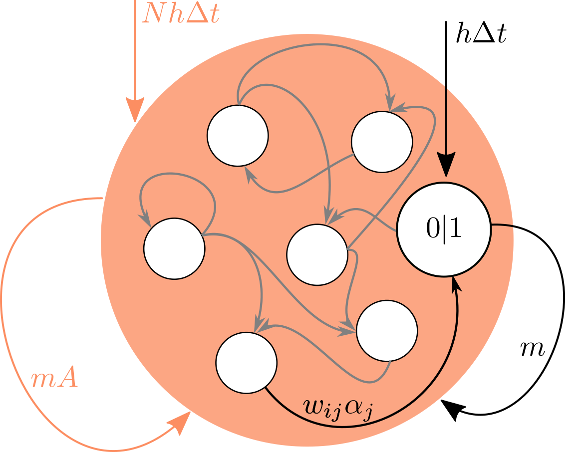
-
stationary activity in a branching process
$\mathbb{E}(A_{t+1}|A_t) = m A_t + Nh\Delta t \hspace{3em}$
with $\overline{a} = \frac{A}{N} = \frac{h \Delta t}{1-m}$
-
homeostatic regulation
with $\overline{a} \to \Delta t~r^\ast$
$m = 1-h/r^\ast$
$\tau = -\Delta t/\ln(m) = -\Delta t/\ln(1-h/r^\ast)$
$\tau = -\Delta t/\ln(1-h/r^\ast)$
Competition of time scales:
dynamic process $\tau$
vs
network homeostasis $\tau^\prime=\tau_\mathrm{hp}/\bar{k}$
Zierenberg, Wilting & Priesemann, Phys. Rev. X (2018)
Emergent temporal correlations in self-regulated networks
$\tau = -\Delta t/\ln(m)$
$\tau = f(J)$

optogenetic stimulation of cultures
Collaboration with Brunel and Sanzeni (Duke, USA) funded by JHS
Mastrogiuseppe & Ostojic, PLoS Comput. Biol. (2017)
Zierenberg, Wilting & Priesemann, Phys. Rev. X (2018)
Computation in complex networks
Past work that I did not have time to talk about
- Supercomputers (MPI)
- Graphic cards (cuda)
 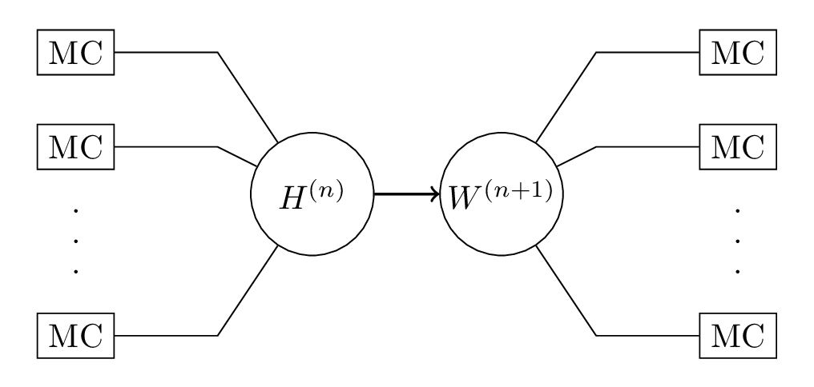
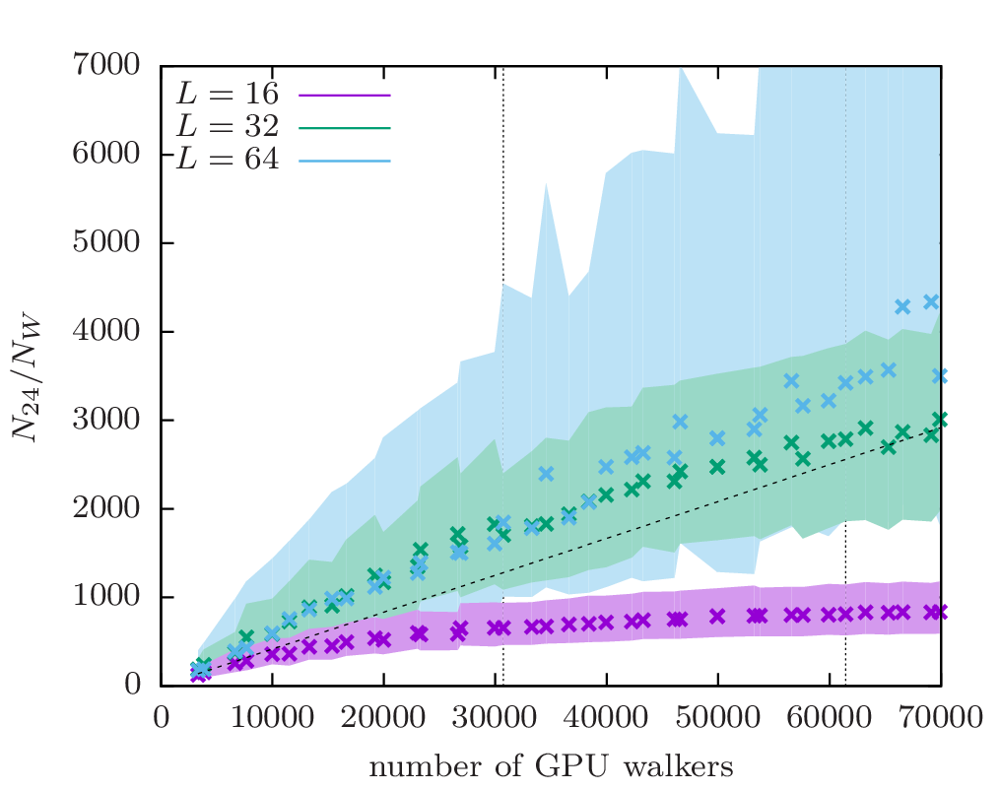
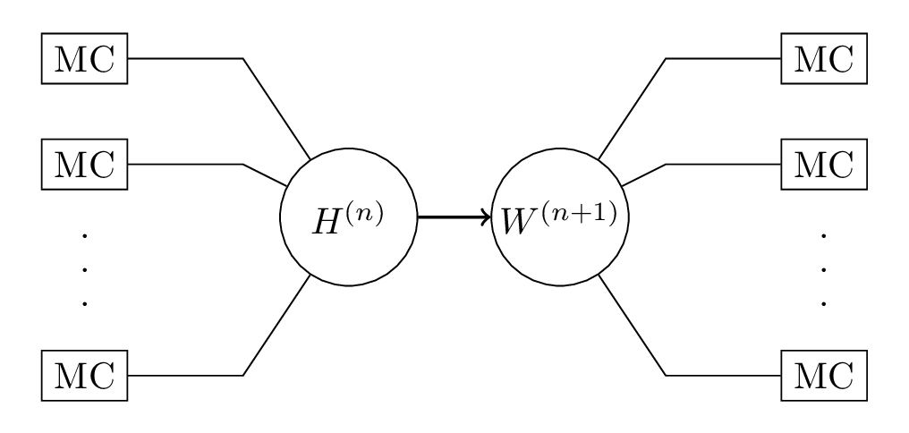
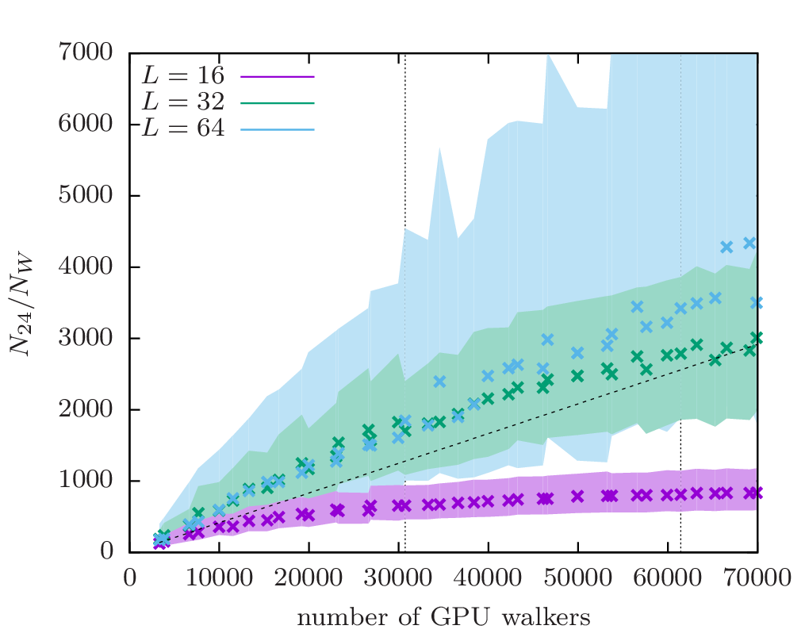
Zierenberg, Marenz, & Janke, Comput. Phys. Commun. (2013)
critical phenomena
- Aggregation of semiflexible polymers
- Free-energy barrier of cluster formation in supercooled solutions
- Universality class in disordered
Blume-Capel model
 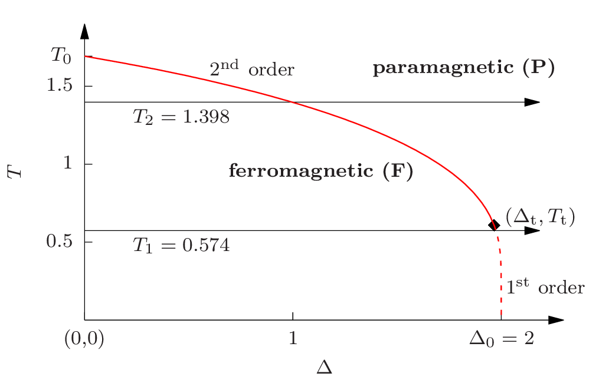
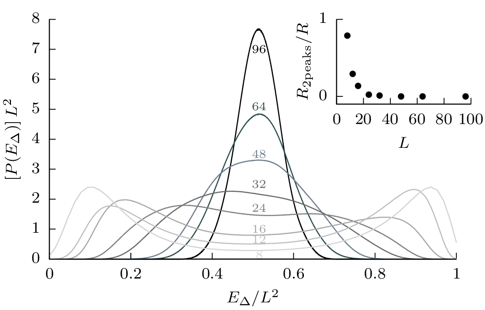
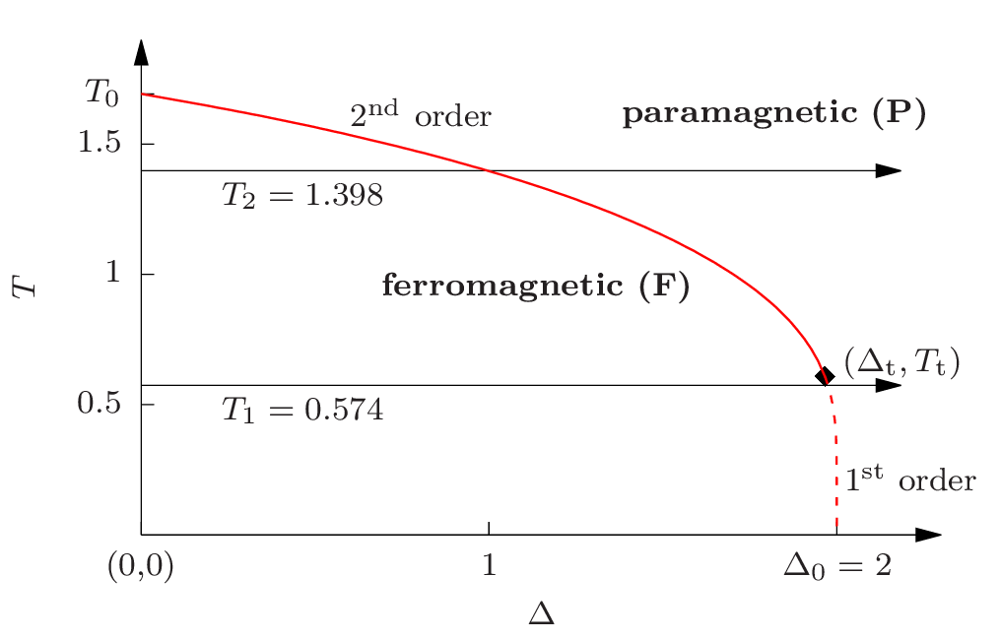
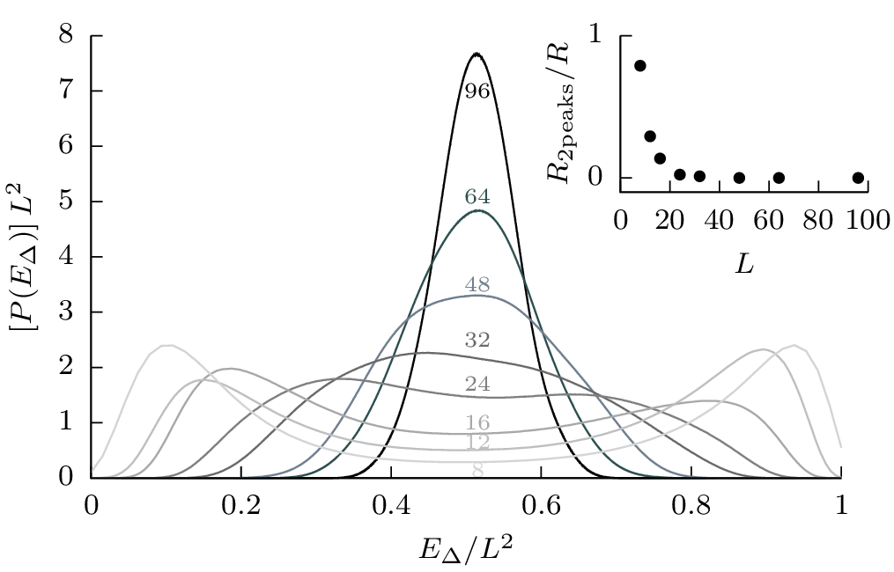
Fytas et al., Phys. Rev. E (2018)
Zierenberg, Schierz, & Janke, Nat. Commun. (2017)
Zierenberg & Janke, Europhy. Lett (2015)
Computation in complex networks
My long-term research goal
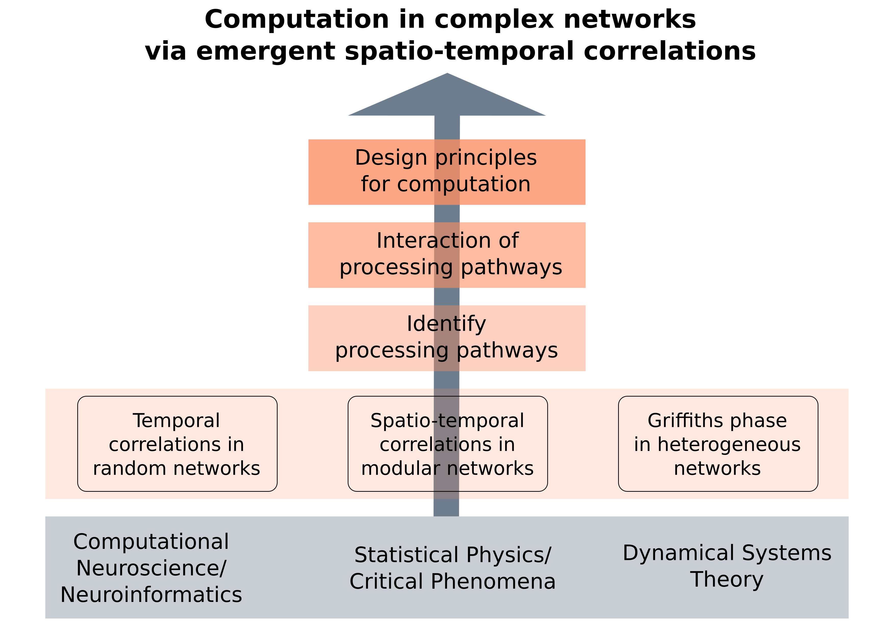Temporal correlations in random networks with noise

V. Priesemann (MPIDS, Germany) and N. Brunel (Duke, USA)
Zierenberg, Wilting & Priesemann, Phys. Rev. X (2018)
Hasson, Chen, & Honey, Trends in Cognitive Sciences (2015)
Murray et al., Nat. Neurosci. (2014)
My long-term research goal
Spatio-temporal correlations in modular networks
(parallel, hierarchical, small-world,...)
Murray et al., Nat. Neurosci. (2014)
Zierenberg, Wilting, Priesemann, & Levina, arXiv (2019)
Eliasmith et al., Science (2012)
My long-term research goal
Griffiths phase in heterogeneous networks
Re-wiring to store new memory


Moretti & Muñoz, Nat. Commun. (2013)

S. Luther & U. Parlitz (Göttingen, Germany),
M. Muñoz (Granada, Spain), and D. Muir (aiCTX, Switzerland)
Buzsaki & Mizuseki, Nat. Neurosci. Rev. (2014)
Vojta, J. Phys. Math. Gen. (2006)
My long-term research goal
Me in Calgary
Acknowledgments
Jens Wilting (now at Bosch)
Joao Pinheiro Neto
Paul Spitzner
Jorge de Heuvel
Leonhard Leppin
Bettina Royen
Andreas Neef
Stefan Luther
Ulrich Parlitz
Anna Levina (Tübingen, Germany)
Wolfhard Janke (Leipzig, Germany)
Nicolas Brunel (Duke, USA)
Alessandro Sanzeni
Miguel A. Muñoz (Granada, Spain)
Martin Weigel (Coventry, UK)
Nikolaos G. Fytas
Dylan Muir (aiCTX, Zurich)


Appendix
Inferring autocorrelation time of subsampled systems with non-stationary external input
$\hspace{3em}\mathbb{E}(A_{t+1}|A_t) = m A_t + \mathbb{E}(h_t)\hspace{1em}$ with $\hspace{1em}\mathbb{E}(a_{t}|A_t)=\alpha A_t $
Generalization to multiple steps$\hspace{3em}\mathbb{E}(A_{t+k}|A_t) = m^k A_t +\sum_{l=1}^{k} m^{k-l} \cdot \mathbb{E}(h_{t+l-1})$
For stationary external input one can show a constant bias in$\hspace{3em}C(k)=\frac{\mathrm{Cov}(a_t,a_{t+k})}{\mathrm{Var}(a_t)} = bm^k=be^{-k\Delta t/\tau}$
$\hspace{3em}b_t=1/(1-(1-\alpha^{-1})F_t^{-1})$
de Heuvel, Wilting, Becker, Priesemann & Zierenberg, in preparation
Evidence for reverberating regime

Wilting & Priesemann, Cereb. Cortex (2019)
Wilting & Priesemann, Nat. Commun (2018)
Examples of complex networks for computation
classification of ECG signals [aiCTX]
 [Khoram et al., Photon. Res. (2019)]
[Khoram et al., Photon. Res. (2019)]
 handwritten digits [Khoram et al., Photon. Res. (2019)]
handwritten digits [Khoram et al., Photon. Res. (2019)]
 synchronized locomotion with coupled nano osciallators
synchronized locomotion with coupled nano osciallators[Dutta et al., Nat. Commun. (2019)] recognition of spoken digits with nanoscale spintronic oscillators
[Torrejon et al., Nature (2017)]
 k-SAT problem with nanolectromechanical oscillators
k-SAT problem with nanolectromechanical oscillators[Matheny et al., Science (2019), private communication]